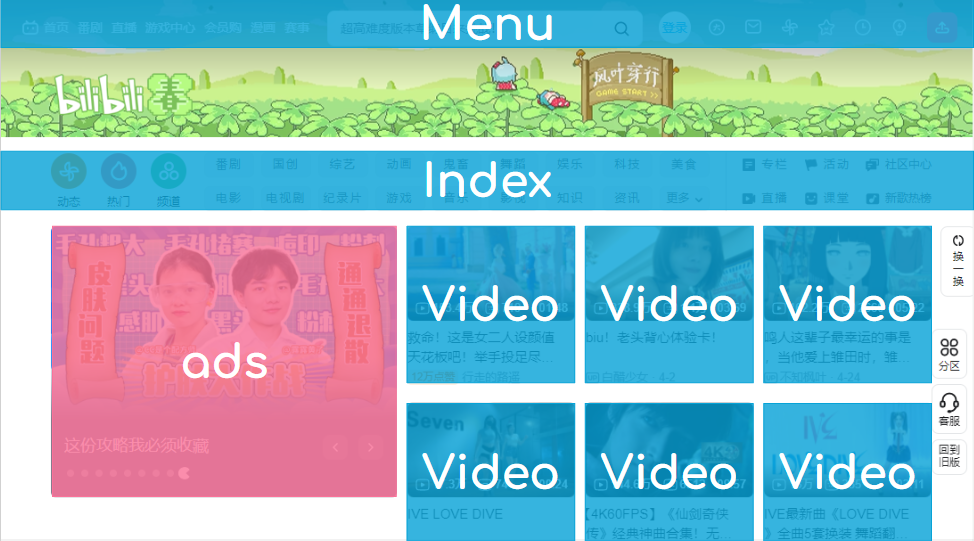
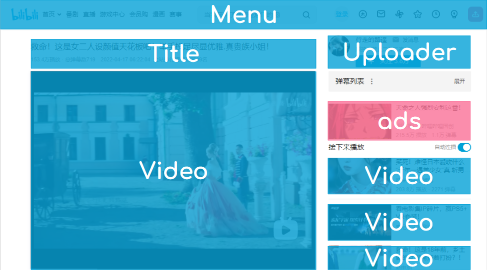
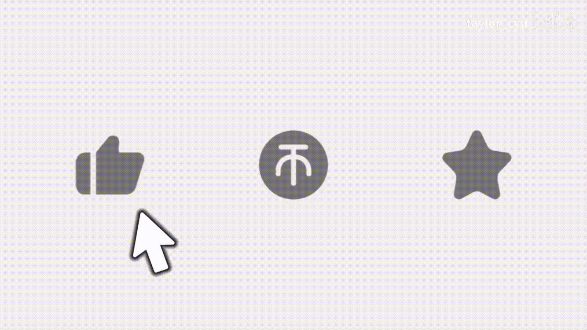
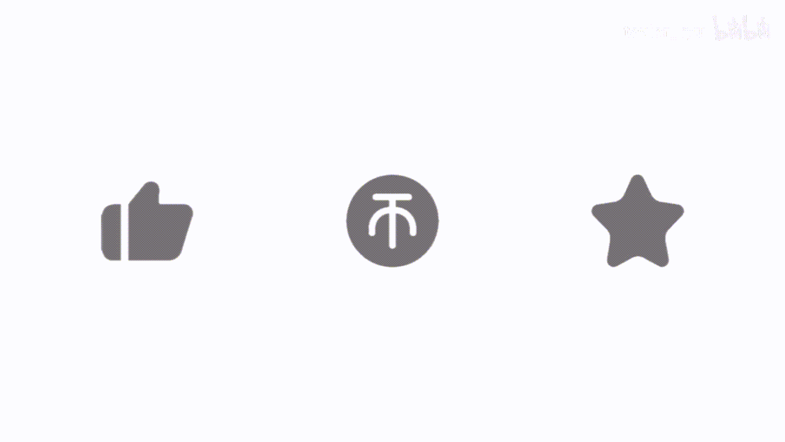

Bilibili, nicknamed B Site, is a video sharing website based in Shanghai
themed around
animation, comics, and games,
where users can submit, view and add overlaid commentary on videos.
Since the mid-2010s, it has become one of the major video streaming platforms in China.
On June 26, 2009, Bilibili was officially established by
Xu Yi.
Xu Yi was inspired by the similar video sharing websites,
Nico Nico Douga and
AcFun.
He spent three days creating a prototype website named Mikufans.cn as a fandom community of
Hatsune Miku.
As it grew, he reshaped the website to specialize in video sharing and launched it on 14 January 2010 with the name Bilibili (bilibili.us), which is the nickname of the
protagonist
Mikoto Misaka in the anime
A Certain Scientific Railgun.
In the same year, its official mascots
"22" and "33" were elected by the community, with a pet Small TV.
In November 2014,
Chen Rui officially joined Bilibili as CEO.
On March 28, 2018, Bilibili was listed on the
Nasdaq Stock Exchange .
On October 9, 2018, Bilibili cooperated with the
Houston Rockets in e-sports. On October 25, it reached a cooperation
with
Tencent in ACG. On December 12, it signed an acquisition agreement mainly for comic assets with
NetEase.
In February 2019,
Alibaba announced its share in it. On January 2, 2020, it and
QQ Music to jointly support musicians.
On April 9, it received a US$400 million investment from
Sony, and users can watch
Sony Music's MV in Bilibili.
Bilibili doesn't have in-video ads. Ads come as static images and links next to videos.


Bilibili website themes change according to seasons/festivals/important dates. The top is interactive with animation or mini games.
Bilibili has "one click three ??? (I don't know how to translate.)" function under the video being played: like, give coin, save to playlist.
Coins are free virtual currency which registered users earn by logging into the app daily. They are only valuable when given out to creators.


New Year Events
Comic Conventions
Bilibili World was an offline cultural themed comic convention created by Bilibili in
2017. The scenes brought together
popular guests such as voice actors, entertainers, and uploaders and formed a comprehensive entertainment carnival integrating performances, exhibitions and interactive games.
Awards
The first Bilibili Power Up annual uploader award ceremony was held in
2019. It is an offline award for
outstanding content creators of Bilibili, aiming to select the annual top 100 uploaders, the best works of the year, and many other awards according to comprehensive dimensions, such as creativity, influence, reputation.


{kind=link}